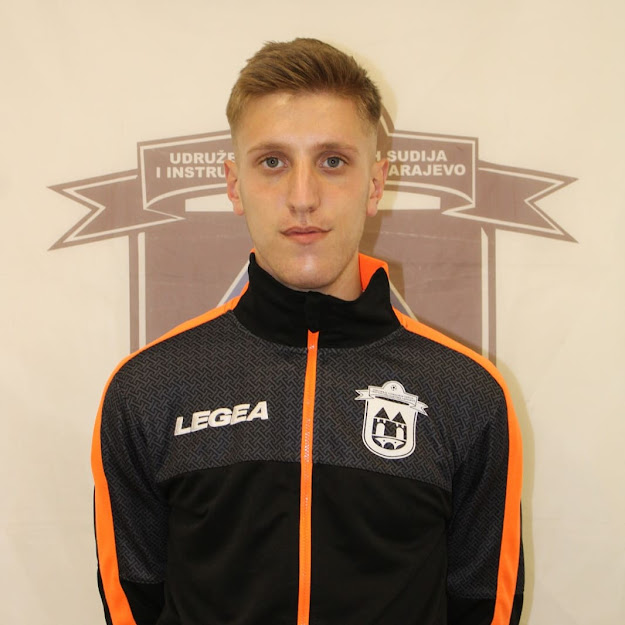

Hello!
My name is Emin Bihorac
I am a student of the Third High School in Sarajevo, I live in Buća Potok and I am in the 4th grade. I decided to focus on football but also information technology in high school.
I like to do things and try my hand at different fields. I am mostly interested in web and web design. I want to work on myself in order to improve my all-round skills that will facilitate my path to my career and independence.
In the future, I would like to become the best referee in Europe.